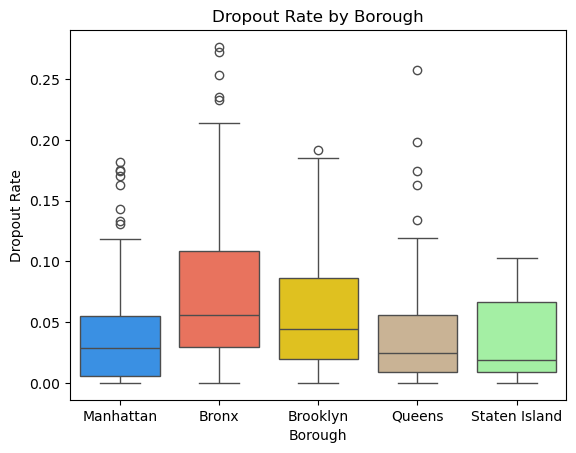
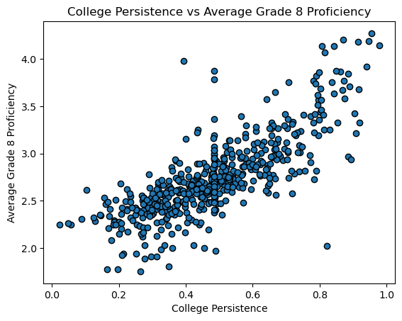
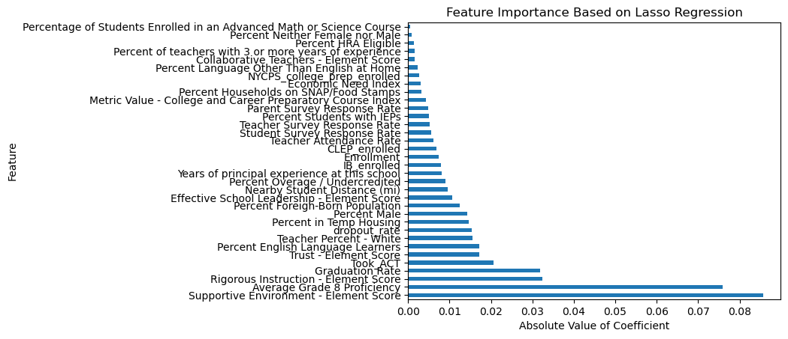

Final Report
Breaking the Cycle: Key Findings and Takeaways
High school dropout rates have a profound impact on students, families, and communities. To bring these numbers down, it’s essential to first understand what’s driving them. This study takes a closer look at how the quality of schools and the socioeconomic challenges students face influence high school outcomes in New York City. By diving into these factors, the goal is to uncover ways to help students succeed.
Data Science Questions:
- How does a school’s environment contribute to better student outcomes?
- What are the most significant predictors of student absenteeism, dropout rates and college persistence?
- What are the interactions between chronic absenteeism, dropout rates, and college persistence?
- How does socioeconomic status impact student absenteeism, dropout rates and college persistence?
- How can early academic indicators be used to identify schools at risk of high dropout or not persisting in college?
Scope
- Collect and clean data, creating a comprehensive dataset of NYC high schools
- Perform exploratory data analysis to uncover trends in the data
- Perform unsupervised learning and supervised learning to find real relationships between the features and targets: chronic absenteeism, dropout rates, and college persistence
- Summarize findings into actionable insights
Exploring the Data
This dataset contains 500 New York City public high schools. We can begin by taking a look at dropout rates across New York City Boroughs, revealing areas of needed intervention.


It is evident that the highest median drop out rate is in the Bronx, followed by Brooklyn. Although there are some high outliers in Queens. This highlights boroughs where intervention is necessary. To take a closer look, we can look at drop out rates by specific NYC school districts.
This plot clearly shows the highest drop out rate to be in district 12, which is located in the Bronx. Next is district 8 which is also located in the Bronx. This plot makes it easier to pinpoint school districts that need to be targeted.
Next, we will examine specific socioeconomic and school features that are hypothesized to impact our target outcomes.
Using statistical testing, it was concluded that there is a statistically significant difference in mean median household income between high schools with high dropout rates and those with low dropout rates. This suggests that students from higher income households, likely with parents who have degrees and employment, are less likely to drop out themselves. This emphasizes the importance of addressing economic disparities to improve these rates.
Supportive Environment score comes from the NYC Quality report and is defined as, “how well the school establishes a culture where students feel safe, challenged to grow, and supported to meet high expectations”1. There is a statistically significant difference in the mean supportive environment score for a school with high and low rates of chronic absenteeism. This is important because it shows that when students feel good about the school environment, and feel a sense of value and community, they are less likely to skip class or be absent.

Figure 6 highlights a strong relationship between college persistence and average grade 8 proficiency, emphasizing the critical need for early intervention. Students who perform well in 8th grade are more likely to succeed in college and persist through their studies. This highlights the importance of addressing academic gaps during middle school, before they affect long-term outcomes in order to set students up for success.
Unsupervised Learning
Dimensionality Reduction

PCA was applied to the socioeconomic factors, revealing a pattern in Figure 7 where schools with higher dropout rates are positioned towards the top of the plot, while those with lower dropout rates are found towards the bottom. This illustrates the significant impact of socioeconomic factors on dropout rates.
T-SNE was able to uncover certain patterns in the data and differentiate schools with varying levels of college persistence in Figure 8. While there is some overlap, the gradient becomes lighter as it moves to the right. This emphasizes the model’s ability to distinguish schools based on their college persistence levels
Clustering

Agglomerative Clustering worked best for this data, and was able to find patterns in the data. Looking at the boxplot in Figure 9, it is clear that Cluster 1 contains schools with the best student outcomes: low chronic absenteeism, low dropout rates, and high college persistence. This indicates that the algorithm successfully identified meaningful patterns in the data, emphasizing the role these features play in evaluating high school outcomes.
Supervised Learning
Regression
Target: Chronic Absenteeism

The LASSO regression gave the features most important to our target, chronic absenteeism. Supportive Environment score emerging as the most important variable in our model. This score reflects how well a school fosters a supportive, challenging environment for students1. The next key feature was Average Grade 8 Proficiency. This metric emphasizes how important it is for children to be on the right track from a young age. The third important factor was Rigorous Instruction score, which measures how engaging and effective the curriculum is in promoting critical-thinking skills1. Additionally, significant socioeconomic factors contributing to chronic absenteeism included Percent English Language Learners and Percent in Temporary Housing.
Binary Classification
Target: Classifying Schools with High vs. Low Dropout Risk
| Metric | Class 0 | Class 1 | Accuracy |
|---|---|---|---|
| Precision | 0.97 | 0.69 | |
| Recall | 0.89 | 0.91 | |
| F1-Score | 0.93 | 0.78 | 0.89 |
Based on the recall score, the gradient boosting model successfully identified high-risk dropout schools 91% of the time. These results suggest that the model can accurately predict schools at high risk of dropout, enabling targeted interventions to address key factors contributing to dropout risk.

The top 15 important features highlight several key factors, with college persistence ranking the highest. This suggests that schools struggling with dropout risk may also have issues with retaining students after their first year of college. Other significant features include the percentage of students in temporary housing and the percentage of overage/undercredited students (students with very few credits), which indicates a strong relationship between socioeconomic challenges and dropout rates.
Multiclass Classification
Target: Classifying Schools with High vs. Medium vs. Low College Persistence
| Metric | High | Low | Medium | Accuracy |
|---|---|---|---|---|
| Precision | 0.60 | 0.67 | 0.92 | |
| Recall | 0.86 | 0.91 | 0.72 | |
| F1-Score | 0.71 | 0.77 | 0.81 | 0.78 |
Examining the recall scores, this gradient boosting multiclass classification model successfully predicts 86% of schools with high college persistence, 72% of schools with medium college persistence, and 91% of schools with low college persistence. While there is room for improvement in predicting the medium category, the model’s ability to accurately identify schools with low college persistence is particularly significant, as this is where intervention is most needed.
Looking at the feature importance, similar to what was seen in the regression model for chronic absenteeism, Average Grade 8 Proficiency is the most important driver of college persistence. It is interesting that this metric continues to have predictive power at the college level. Additionally, both dropout rate and the percentage of chronically absent students are significant features in this model, highlighting the interconnectedness of these metrics within schools that must be addressed.
Key Takeaways
- Grade 8 Proficiency is a crucial indicator of future success, highlighting the importance of early intervention to address academic challenges before they escalate
- Supportive and Trusting Environments contribute to better student outcomes, emphasizing the need for schools to create cultures where students feel safe, supported, and motivated
- Economic Disadvantage plays a significant role in long-term outcomes such as college persistence, with students from lower-income backgrounds facing more barriers to succes
- The Connection: Chronic absenteeism, dropout rates, and college persistence are closely linked. Addressing absenteeism early is key to preventing dropout and ensuring students stay on track for college success.
By identifying and understanding the key drivers, such as school environment and socioeconomic factors, targeted strategies can be developed to support students more effectively. Empowering schools to create safe, supportive, and inclusive environments, while addressing broader economic challenges, is essential to ensure that every student has the opportunity to succeed academically and beyond.